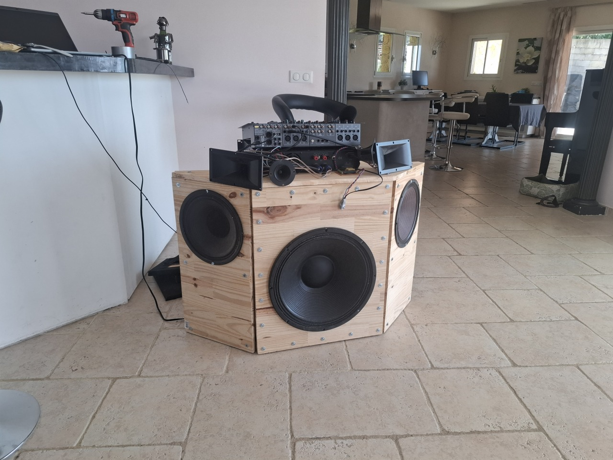
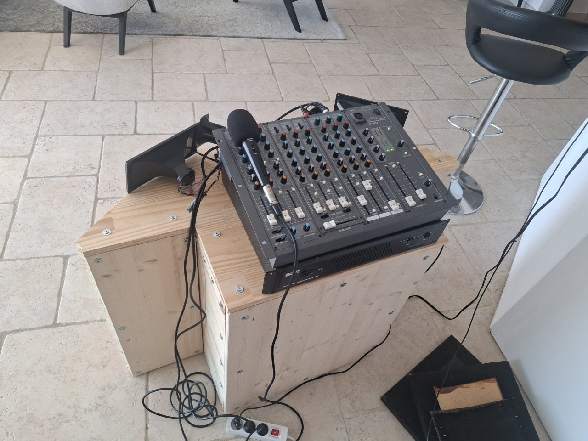

TIPE 2025–2027 · Sobriété · Efficacité · Optimisation
Filtrage passif ou actif :
le raccord à 100 Hz
Enceinte deux voies — réalisation personnelle
THOMAS MAREEL · PTSI 2
Pré-soutenance · présentation du sujet & de la démarche
Le système étudié
Une enceinte deux voies, construite maison

déposer
assets/enceinte-face.jpg
Caisson pin massif · 18″ en façade + 2 HP latéraux

déposer
assets/enceinte-banc.jpg
Chaîne : pré-ampli SX-801 · ampli t.amp E-800 · micro de mesure
Le caisson existe et fonctionne ; il reste à concevoir le filtrage du raccord.
Le problème
Répartir le son : un raccord à 100 Hz
Problématique. Filtrage passif ou actif : quelle architecture offre le
meilleur compromis sobriété / efficacité pour le raccord à 100 Hz ?
Choix de 100 Hz : garder les médiums au-dessus de leur résonance (sinon distorsion).
Démarche d'ingénieur
Trancher objectivement : un cahier des charges
| Critère | Ce que je mesurerai |
|---|
| Précision de f_c | écart entre coupure visée (100 Hz) et coupure réelle |
| Pente d'atténuation | dB/octave effectifs |
| Pertes | puissance dissipée (DCR bobine), rendement |
| Coût & encombrement | nombre, taille, prix des composants |
| Complexité système | nb d'amplis, alimentation, montage |
Sobriétécomposants · coût
Efficacitépertes · pente
Optimisationarbitrage pondéré
Le cœur du TIPE
Trois architectures à comparer
Duel central : 1.B passif vs 3 actif (même ordre) · l'ordre 1 (1.A) et le RC signal faible (2) servent de contre-exemples.
Modélisation
Filtre Butterworth 2nd ordre
\( \underline{H}_{PB}=\dfrac{1}{1+\frac{1}{Q}\frac{j\omega}{\omega_c}+(\frac{j\omega}{\omega_c})^2} \) · \( Q=\tfrac{1}{\sqrt2} \) · pente \( \pm 12~\text{dB/oct} \)
Démarche expérimentale
Protocole de mesure prévu
Banc électrique — rigueur
Banc acoustique — réel
D'abord caractériser \(Z(f)\) et \(f_s\) des HP · simuler (LTspice, Python) · incertitudes propagées.
Feuille de route
Démarche & perspectives
Perspectives. Réseau de Zobel (linéariser \(Z\) du HP) · Linkwitz-Riley
(somme plate) · ordre 4 (encombrant en passif, trivial en actif) · correction numérique (DSP).
Pré-soutenance · TIPE 2025–2027
Merci de votre attention
Vos remarques sur la démarche sont les bienvenues.